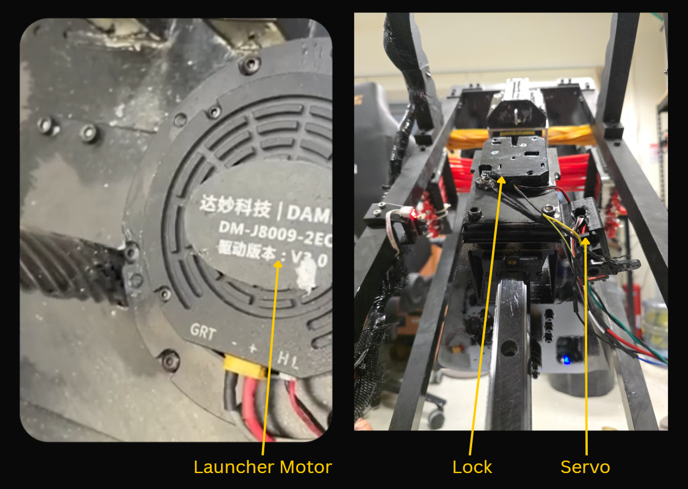

Measuring Force
Estimate firing force during pull-back to ensure consistent launch energy and support tuning of pull depth.
Delivering precise launch control, the D.A.R.T. launcher electronics subsystem coordinates elastic draw and release to produce repeatable dart propulsion across the required operational range.

Y4 EE
The comprehensive V-shaped system methodology used for this subsystem is detailed in the Yaw Electronics section.
Estimate firing force during pull-back to ensure consistent launch energy and support tuning of pull depth.
Confirm latch lock-in after pull-back so release is only permitted when the mechanism is fully engaged.
Trigger release on command with repeatable timing and sufficient actuation authority across operating pullback distances.
Provide controlled carriage pull-back motion with stable speed and torque to meet preload targets without overshoot.
In the interim version, the launcher was intended to use the release mechanism integrated with the solenoid lock. However, testing showed that this approach did not remain reliable once the launcher was pulled back beyond a short distance, as the solenoid lock was no longer able to release consistently under that condition.
Because of this, the release method was changed to a servo-actuated mechanism that mechanically pulls the unlocking feature. This provided a more dependable release approach for the required launcher pullback distance.
In the interim architecture, a load cell was planned to measure launcher tension or firing force. In the current version, the load cell was removed after the mechanical design side determined that the launching motor tension feedback was sufficient for this purpose. As a result, the system now relies on motor torque feedback obtained through CAN telemetry, which was considered good enough to monitor the required tension information without adding a separate load cell sensing path.

Launcher Motor
Damiao DM-J8009-2EC Integrated brushless servo actuator (motor + driver + dual encoders)
Main draw actuator for launcher carriage and elastic-band preload. The module is an integrated Damiao servo actuator with onboard sensing and communication for closed-loop draw control.

| Parameter | Value |
|---|---|
| Electrical — motor | |
| Rated voltage | 24 V (supports 24–48 V) |
| Rated / peak current | 20 A / 50 A |
| Rated / peak torque | 20 N·m / 40 N·m |
| Rated speed | 100 rpm @ 24 V; 200 rpm @ 48 V |
| No-load speed (max) | 160 rpm @ 24 V; 320 rpm @ 48 V |
| Motor characteristics | |
| Reduction ratio | 9 : 1 |
| Pole pairs | 21 |
| Phase inductance | 61 µH (@25 °C) |
| Phase resistance | 0.09 Ω (@25 °C) |
| Mechanical | |
| Outer diameter | 98 mm |
| Height | 61.7 mm |
| Mass | ≈ 896 g |
| Encoder / interfaces | |
| Encoder bits / count | 14-bit · 2× magnetic (single-turn) |
| Control interface | CAN @ 1 Mbps |
| Parameter interface | UART @ 921600 bps |
Lock with Detection Sensor
Engages the elastic band and provides latch status feedback


Servo release mechanism
TIANKONGRC TD-8120MG Digital high-torque servo · 20 kg·cm class · PWM control
Replaces the solenoid-based release after testing showed the solenoid was unreliable at larger pullback distances. The servo mechanically pulls the unlocking mechanism and can release the lock reliably at the required draw depth. This is the same model used in the feeder electronics section.

| Parameter | Value |
|---|---|
| Electrical | |
| Working voltage | 4.8–7.2 V DC |
| No-load speed (60°) | 0.18 s @ 4.8 V · 0.14 s @ 7.2 V |
| Running current | 140 mA @ 4.8 V · 200 mA @ 7.2 V |
| Stall torque | 23.5 kg·cm @ 4.8 V · 26.8 kg·cm @ 7.2 V |
| Stall current | 2600 mA ±10% @ 4.8 V · 3400 mA ±10% @ 7.2 V |
| Mechanical / Control | |
| Dimensions (L × W × H) | 40.0 × 20.5 × 40.5 mm |
| Mass | 56 g ±5% |
| Signal | PWM · digital amplifier |
| Pulse width range | 500–2500 µs (neutral 1500 µs) |
| Dead band | 5 µs |
Shown in Launcher Design